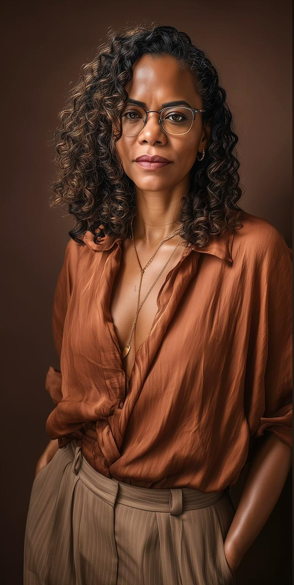
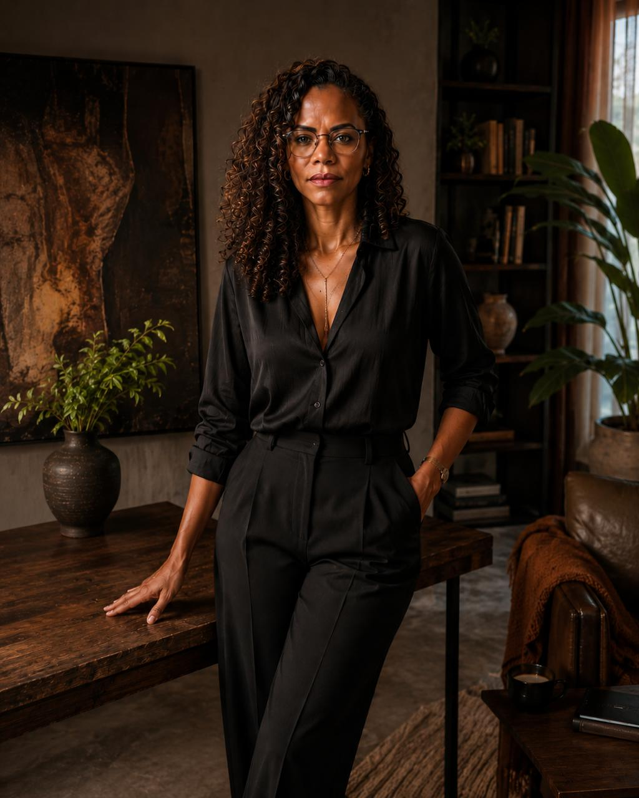

escritora, criadora, terapeuta sistémica em formação
Vivo entre o silêncio e o movimento. O meu trabalho parte de uma só ideia: por baixo do que te aperta, no amor ou na vida, há sempre um nó que vem de trás. Eu ajudo-te a vê-lo, e a voltar a ti.
os caminhos
Para a mulher que tem potencial a mais e clareza a menos. Um percurso para limpar a mente, bastar-se, e tornar sonhos em acções.
→ o amor que dessincronizouOs casais não morrem por falta de amor, morrem por dessincronia. Um diagnóstico para veres o nó que te tira o amor.
→ a escolaOs cursos de transformação, onde se atravessa cada véu que nos separa de quem somos.
→ o livroOs 7 Véus do Despertar — o livro, e o caminho que ele abre.
→ o universoA app do universo. Prática, leitura, e a comunidade que se forma à volta dele.
→ música, presençaMúsica para o silêncio interior. Meditação, presença, e o som de voltar a casa.
→
quem sou
Sou autora de Os 7 Véus do Despertar e criadora do universo Sete Ecos. Estudo os sistemas que nos formam, aquilo que herdamos sem escolher e que molda o que nos deixamos ter, no amor, no trabalho, na vida.
Não venho ensinar o que tenho. Venho mostrar o caminho até te bastares. Porque o que se basta, atrai.
Vivianne